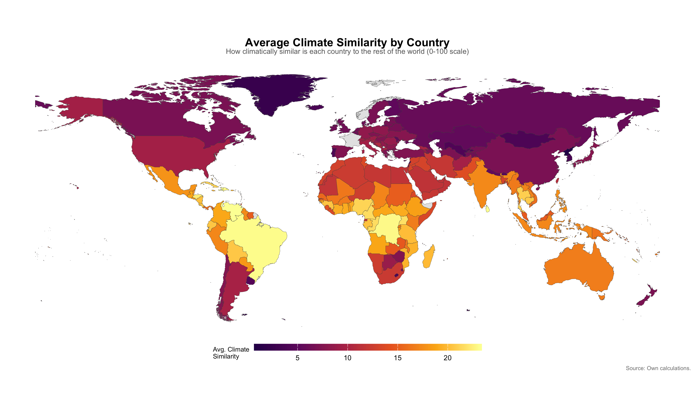
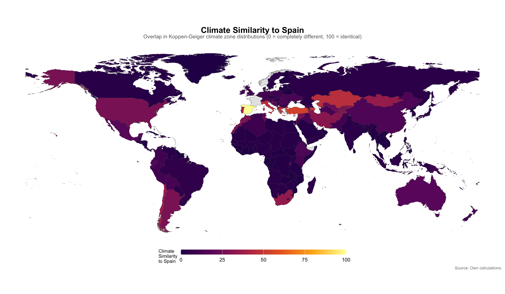
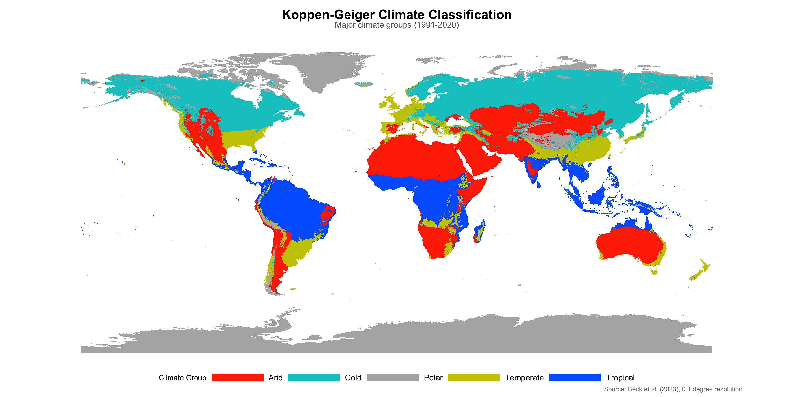
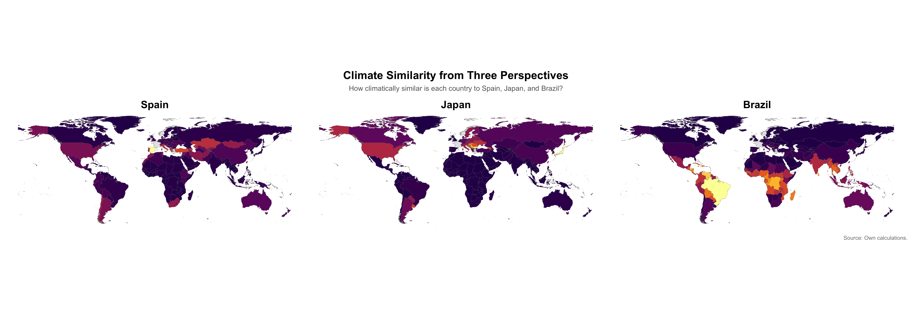

Exploring how geography, climate, trade, and culture shape what countries eat — using bilateral food similarity indices and spatial analysis.
Select a country to see how climatically similar it is to every other country. Hover over countries for details, zoom to explore.
Overview maps for the paper.




We measure bilateral climate similarity using the same overlap method as the Finger-Kreinin food similarity index. For each country, we compute the share of land area in each of the 30 Koppen-Geiger climate zones. The similarity between two countries is then:
Climate Similarityij = Σ min(siz, sjz) × 100
where s_iz is country i's share of land in climate zone z. Scores range from 0 (completely different) to 100 (identical climate distributions).
Climate: Koppen-Geiger classification at 0.1° resolution (1991–2020) from Beck et al. (2023). Food: FAO Food Balance Sheets (kcal/capita/day). Trade & gravity: CEPII Gravity, BACI HS22. GDP: World Bank. Country polygons: Natural Earth (ne_countries).